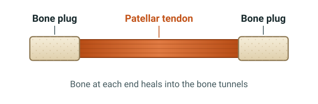
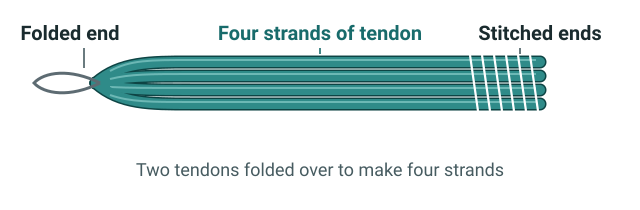
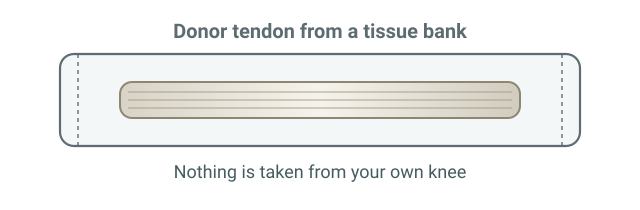

Which graft will rebuild my ACL?
Your surgeon will replace your torn ACL with a new piece of tissue — called a graft. There are four main options. Each comes from a different place, and each has real trade-offs. This page explains what they are and what the evidence says.

What is a graft?
A graft is a piece of tendon or ligament used to replace your torn ACL. The surgeon threads it through bone tunnels and fixes it in place. Over months it becomes your new ACL.
If the tissue comes from your own body, it is called an autograft. If it comes from a donor (tissue bank), it is called an allograft. Most surgeons in active young patients prefer autograft.
The four main options
1. Patellar tendon (bone-tendon-bone, or BTB/BPTB)
This graft uses the middle third of the patellar tendon (the tendon connecting your kneecap to the front of your shin bone), plus a small bone plug from each end. The bone plugs fit inside the tunnels and hold the graft firmly in place.

2. Hamstring autograft (semitendinosus / gracilis)
Two tendons at the back of your thigh — the semitendinosus and gracilis — are harvested and folded together to form the graft. Most surgeons fold them into four strands. A smaller graft diameter increases the chance of re-tear, especially in young active patients.[29]

3. Quadriceps tendon
The thick tendon above your kneecap (the quadriceps tendon) is used. It can be taken with or without a bone plug from the top of the kneecap. It produces a large, strong graft and has gained popularity in recent years.
4. Allograft (donor tissue)
Donor tissue (from a tissue bank) avoids any harvest site pain in your own knee. However, in young active patients, allograft re-tear rates are notably higher than autograft — so most guidelines recommend autograft for patients under 25 who play sport.

Side-by-side comparison
| Graft | Source | Main pros | Main cons | Evidence notes |
|---|---|---|---|---|
| Patellar tendon (BTB) | Your own knee — front | Bone-to-bone healing; very strong fixation; well-studied; lower re-tear rate than hamstring in young patients[21] | More front-of-knee pain early; possible kneeling discomfort long-term; slight risk of kneecap fracture (rare) | SANTI data: BPTB alone had 5.1% failure rate vs 11.1% for hamstring in patients under 25[21] |
| Hamstring autograft | Your own thigh — back | Less front-of-knee pain; smaller incision; easier to harvest; most studied in LET trials | Higher re-tear risk in young pivoting athletes, especially if the graft is thin[21][29]; may weaken hamstring strength slightly | The STABILITY trial — the largest RCT on adding LET — used hamstring grafts exclusively[1] |
| Quadriceps tendon | Your own knee — above kneecap | Large graft volume; less donor-site pain than BTB; growing evidence base; good option if other sites are unavailable | Less long-term data than BTB or hamstring; some temporary quad muscle weakness after harvest | Included in the 2026 meta-analysis[21]; evidence growing but fewer long-term RCT data than BTB or hamstring |
| Allograft (donor graft) | Tissue donor bank | No harvest site pain; suitable when autograft is not possible; shorter surgery time | Higher re-tear risk in young active patients; slower biological incorporation; not recommended for patients under 25 returning to pivoting sport | Most guidelines recommend autograft for young, active patients; allograft may be acceptable for lower-demand or older patients |
Does the graft choice affect whether I need an LET?
Yes — and this is important. The strongest evidence for adding a LET (lateral extra-articular tenodesis) comes from the STABILITY trial, which only studied hamstring autografts.[1] In that trial, young patients with a hamstring graft had about 1 in 9 re-tears without an LET — and only about 1 in 25 when LET was added.
If you and your surgeon choose a patellar tendon or quadriceps graft, the re-tear risk is already somewhat lower — so the benefit of adding an LET may be smaller. But for hamstring autograft in a young pivoting athlete, the evidence for LET is strong.
If you have very flexible joints ("double-jointed"), a hamstring graft may perform less reliably without extra support, too.[24]
Next: learn about the LET. Once you understand graft options, the natural next question is whether adding a small extra procedure on the outside of your knee could further protect it.